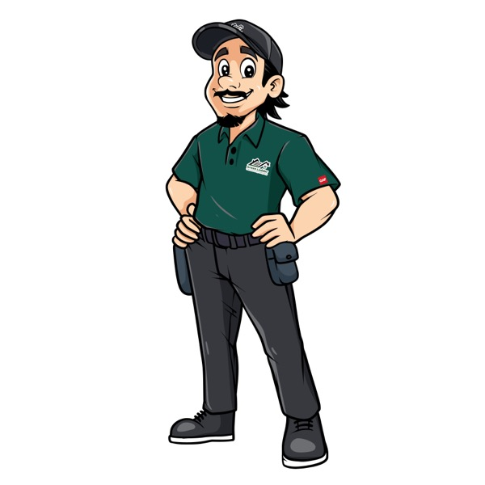
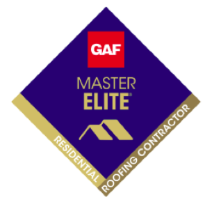
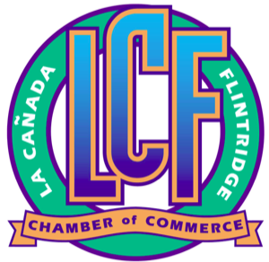

San Gabriel Valley's Trusted Roofer · Since 2009
Your Free Roof Inspection, Done Right
A 2nd-generation, family-owned roofing company. 1,000+ roofs, 15+ years, and a documented photo report you keep. No pressure, no surprises.
📷
We document the roofPhotos of your actual roof, yours to keep.🧾
We explain your optionsRepair vs. replacement, in plain language.🤝
No pressureYou get clear information and decide on your time.4.9★250+ Google reviews
1,000+roofs completed
15+ yrs2nd-gen family-owned
Licensedbonded & insured
Certified, accredited & local


★★★★★
"They documented everything with photos and walked me through it. No pressure to replace, just honest options."
Verified Google review
★★★★★
"Showed up on time, professional crew, left the property clean. Exactly what they promised."
Verified Google review
★★★★★
"Second-generation family business and it shows. They actually care about doing it right."
Verified Google review
✓ Our promise to you
- Workmanship warranty on every roof we install
- Manufacturer material warranty (GAF-eligible systems)
- Clean job site, every day, with a final magnetic nail sweep
- Documented photos so you always know what was done
Financing available. A roof is a real investment, and financing options may be available for qualified homeowners. Your rep can explain what applies to your project.
Ready to get on the schedule?
It takes about a minute to set up. We work around your schedule, mornings, afternoons, or evenings.